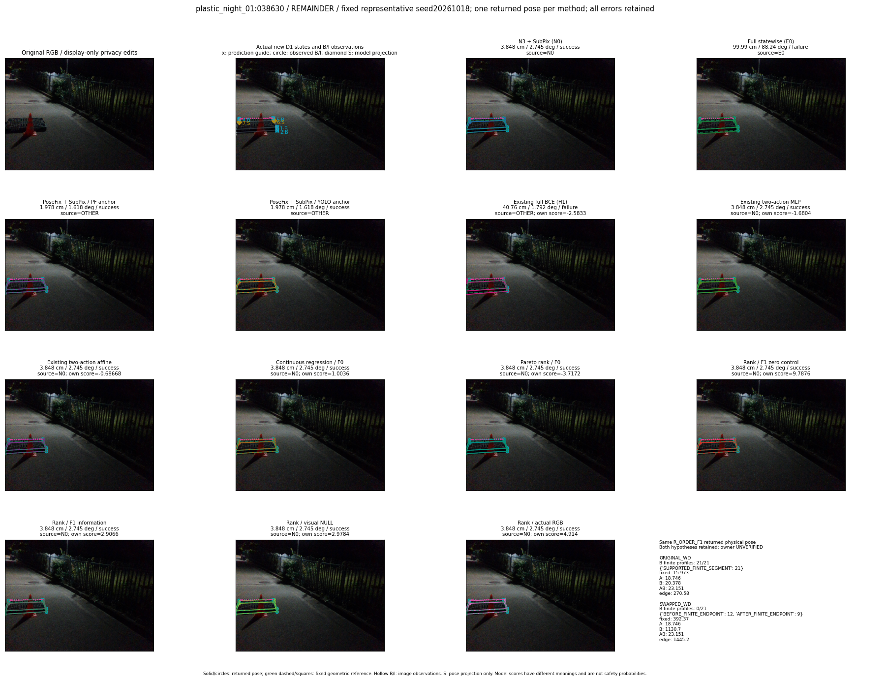
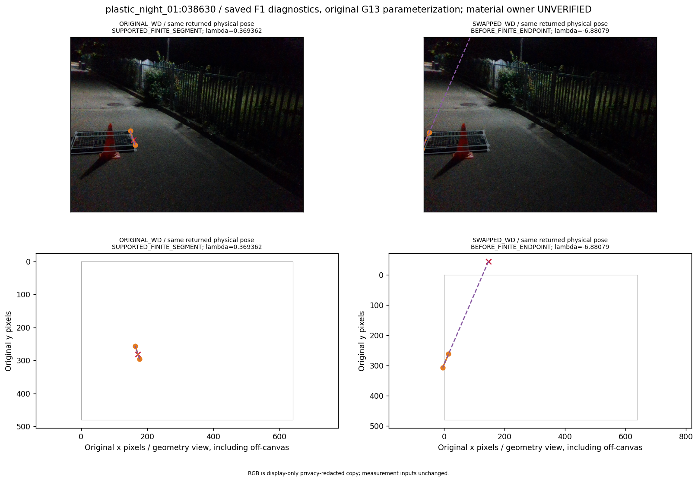
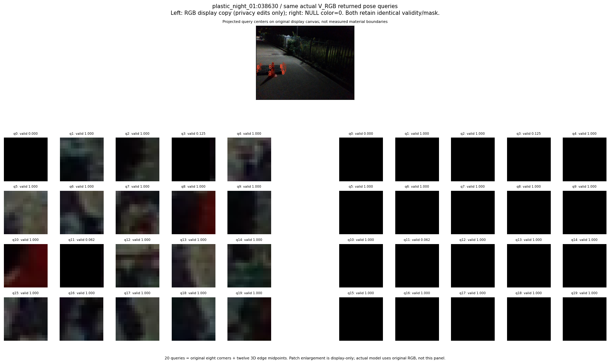

R_CONT_F0_s20261018:translation_improvement · R_ORDER_F0_s20261018:translation_improvement · R_ORDER_F1_ZERO_s20261018:translation_improvement · R_ORDER_F1_s20261018:translation_improvement · V_ORDER_NULL_s20261018:translation_improvement · V_ORDER_RGB_s20261018:translation_improvement
thumbnail detail support visual



실선은 반환 자세, 초록 점선은 고정 기하 참조입니다. S는 영상 관측이 아닙니다. 점수는 모델별 의미가 다르며 보정된 안전 확률이 아닙니다. 개인정보 처리는 표시 사본에만 적용했습니다.
| 방법·seed | 위치 / 회전 / 공동성공 | 실제 출처 | 선택 후보 | 각 모델 자체 점수 |
|---|---|---|---|---|
| N0 | 3.848 cm / 2.745 deg / success | N0 | N/A | N/A |
| E0 | 99.99 cm / 88.24 deg / failure | E0 | N/A | N/A |
| E0_REGENERATED | 99.99 cm / 88.24 deg / failure | E0 | E0_REGENERATED | N/A |
| POSEFIX_SUBPIX_PF_ANCHOR | 1.978 cm / 1.618 deg / success | OTHER | N/A | N/A |
| POSEFIX_SUBPIX_YOLO_ANCHOR | 1.978 cm / 1.618 deg / success | OTHER | N/A | N/A |
| D1_H1_MLP_s20261018 | 40.76 cm / 1.792 deg / failure | OTHER | G10/ORIGINAL_WD/selected | -2.583254814147949 |
| D1_H1_MLP_s20261019 | 40.76 cm / 1.792 deg / failure | OTHER | G10/ORIGINAL_WD/selected | -2.420691967010498 |
| D1_H1_MLP_s20261020 | 40.76 cm / 1.792 deg / failure | OTHER | G10/ORIGINAL_WD/selected | -3.0518412590026855 |
| D1_H1_PAIR_MLP_s20261018 | 3.848 cm / 2.745 deg / success | N0 | N0 | -1.6804375648498535 |
| D1_H1_PAIR_MLP_s20261019 | 3.848 cm / 2.745 deg / success | N0 | N0 | -1.8179736137390137 |
| D1_H1_PAIR_MLP_s20261020 | 3.848 cm / 2.745 deg / success | N0 | N0 | -2.21935772895813 |
| D1_H1_PAIR_ROLE_AFFINE_s20261018 | 3.848 cm / 2.745 deg / success | N0 | N0 | -0.686683177947998 |
| D1_H1_PAIR_ROLE_AFFINE_s20261019 | 3.848 cm / 2.745 deg / success | N0 | N0 | -1.059218168258667 |
| D1_H1_PAIR_ROLE_AFFINE_s20261020 | 3.848 cm / 2.745 deg / success | N0 | N0 | -0.5922626256942749 |
| R_CONT_F0_s20261018 | 3.848 cm / 2.745 deg / success | N0 | N0 | 1.0036369562149048 |
| R_CONT_F0_s20261019 | 3.848 cm / 2.745 deg / success | N0 | N0 | 1.1566084623336792 |
| R_CONT_F0_s20261020 | 3.848 cm / 2.745 deg / success | N0 | N0 | 1.2941762208938599 |
| R_ORDER_F0_s20261018 | 3.848 cm / 2.745 deg / success | N0 | N0 | -3.7171506881713867 |
| R_ORDER_F0_s20261019 | 3.848 cm / 2.745 deg / success | N0 | N0 | -1.4615492820739746 |
| R_ORDER_F0_s20261020 | 3.848 cm / 2.745 deg / success | N0 | N0 | -0.8246487379074097 |
| R_ORDER_F1_ZERO_s20261018 | 3.848 cm / 2.745 deg / success | N0 | N0 | 9.78757095336914 |
| R_ORDER_F1_ZERO_s20261019 | 3.848 cm / 2.745 deg / success | N0 | N0 | -5.575145244598389 |
| R_ORDER_F1_ZERO_s20261020 | 3.848 cm / 2.745 deg / success | N0 | N0 | 3.743910789489746 |
| R_ORDER_F1_s20261018 | 3.848 cm / 2.745 deg / success | N0 | N0 | 2.906630277633667 |
| R_ORDER_F1_s20261019 | 3.848 cm / 2.745 deg / success | N0 | N0 | 5.217024326324463 |
| R_ORDER_F1_s20261020 | 3.848 cm / 2.745 deg / success | N0 | N0 | 1.9764255285263062 |
| V_ORDER_NULL_s20261018 | 3.848 cm / 2.745 deg / success | N0 | N0 | 2.978400468826294 |
| V_ORDER_NULL_s20261019 | 3.848 cm / 2.745 deg / success | N0 | N0 | 1.4590396881103516 |
| V_ORDER_NULL_s20261020 | 3.848 cm / 2.745 deg / success | N0 | N0 | 4.333561897277832 |
| V_ORDER_RGB_s20261018 | 3.848 cm / 2.745 deg / success | N0 | N0 | 4.913962364196777 |
| V_ORDER_RGB_s20261019 | 3.848 cm / 2.745 deg / success | N0 | N0 | 0.6025443077087402 |
| V_ORDER_RGB_s20261020 | 3.848 cm / 2.745 deg / success | N0 | N0 | -7.027599334716797 |